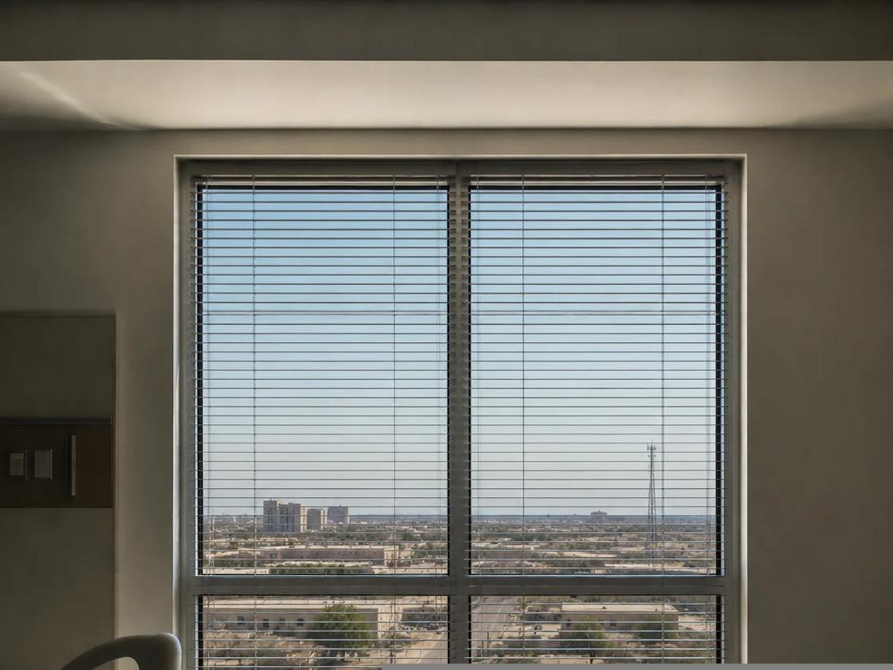

The problem
The existing windows in Building 1 were past their service life. In West Texas that is not a cosmetic issue. The sun does most of the damage out there, and old single glazed units in an aging frame bleed conditioned air all summer while the cooling plant works harder to keep up. Replacing them is an energy project as much as an architectural one.
But a hospital window cannot be selected from a catalog on thermal performance alone. It sits in a patient care environment, in a federal building, which adds two requirements a commercial office would never see.
Job one, keeping the heat out
The new units are tinted and heat reflective, with a thermal break in the frame, double glazing, and argon fill between the panes. Each of those does a specific thing. The tint and the reflective coating turn away solar heat before it enters. The thermal break interrupts the aluminum so heat cannot conduct straight through the frame. The argon between the panes slows heat transfer better than plain air.
Together they cut the cooling load on a building that spends most of the year fighting the sun, which is the difference between a window that merely looks new and one that lowers what the campus spends every month.
Job two, patient safety
In a hospital, an operable window is a risk to be managed. The bottom sash on these units opens six inches and stops. The hardware holds it open at that limit, and the handles are removable, so staff control whether it can be opened at all.
That single detail is a good example of why healthcare architecture is its own discipline. The window still ventilates, still gives a patient fresh air and a view, and still cannot be used to do harm. None of that is visible in the finished building, which is exactly the point.
Job three, blast resistance
Because this is a federal medical center, the glass was evaluated against blast resistance requirements, with security consulting from Force Protect. The reasoning is straightforward: in an explosion, most injuries come from flying glass rather than the blast itself. Laminated glass holds together because a plastic interlayer bonds the panes, so a broken window stays in its frame instead of becoming fragments.
It is a requirement most people never think about, and one that has to be designed in from the start rather than added later.
Why it matters
Three requirements, one assembly, and no room to trade one against another. The window has to insulate, protect a patient, and hold together under pressure, while still looking like nothing more than a window. On a hospital campus, that is usually the mark of the work being done right.
